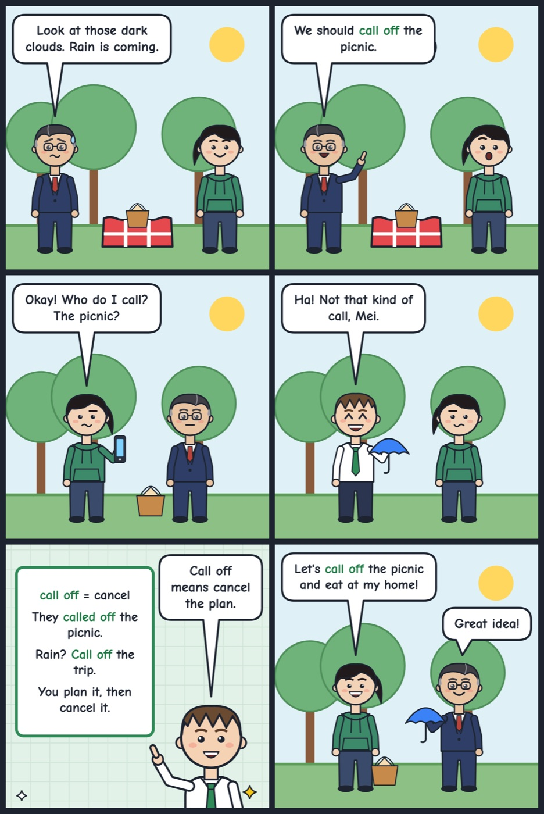

call off
To cancel something that was planned.
They called off the picnic because of the rain.
Tip: Use it as a separable phrasal verb: 'call off the meeting' or 'call it off'; with a pronoun, it must go in the middle ('call it off', not 'call off it'). It is also common in the passive: 'The match was called off.'
Hear it in conversation
Workbook
1. What does it mean?
In this conversation, what does "called off" mean?
2. Fill the gap
The airline had to the flight because of the storm.
3. Choose the best reply
Amira: Did the football match go ahead in this weather?
4. Your turn: speak
Tell me about a time when a plan of yours had to be cancelled. What happened?
Show an example answer
Last summer my friends and I planned a weekend trip to the coast, but one of us got ill, so we called it off at the last minute. We were disappointed, but we rebooked for a month later and had a much better time.
Answer key: call off
- 1. C. Cancelled something that had been planned
- 2. call off
- 3. B. No, they called it off an hour before the start.
- 4. Example: Last summer my friends and I planned a weekend trip to the coast, but one of us got ill, so we called it off at the last minute. We were disappointed, but we rebooked for a month later and had a much better time.
See it in a comic
